Projection mapping · Windows
Map the wall. Trust the show.
lumap maps video, images, loops and live inputs onto physical surfaces through one or many projectors. Plug them in, click Create outputs, drag the corners on the wall. The geometry is proved against a reference renderer on every push, and the show mode is built for the night it matters.
lumap runs on Windows today. macOS and Linux builds are on the way; star the repository to hear when they land. The Windows installer and the portable zip are on the releases page.
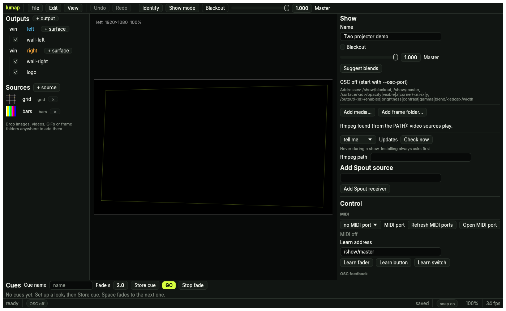
How it works
Two minutes from a cable to a mapped wall.
No calibration wizard, no camera, no account. The welcome screen already knows your displays.
Create outputs
Plug in the projectors and open lumap. One click gives every secondary display a borderless output showing an alignment grid. Press I to flash each output's name on its projector, so four of them never get mixed up.
Drag the corners
Pull the four handles until the grid sits on the surface, on the canvas or on the wall itself. Zoom, snap, nudge with the arrows, read the numbers. Curved surface? Switch the warp to a Bezier mesh.
Store cues, press Space
Add media, set up a look, store a cue. Change something, store another. Space fades between them. F10 locks the show, and Ctrl+S keeps everything in one small TOML file.
Features
Everything a show needs, nothing it does not.
Outputs
One per projector: size, colour (brightness, contrast, gamma), a four-edge blend with width, curve and blend gamma, placement on a monitor, and a calibration overlay.
Surfaces and warps
Corner-pin quads are true homographies with perspective-correct sampling. Curved surfaces use bicubic Bezier meshes. Opacity, z-order, blend modes, crop and feathered polygon masks.
Sources
Test patterns, solid colours, PNG and JPEG, video through ffmpeg, numbered image sequences, GIFs, six animated generators and Spout senders. One shared transport: play, loop, speed, restart.
Blending and calibration
Overlaps blend in linear light with gamma-correct falloffs. Suggest blends sets the fades for you; overlays (grid, crosshair, colour bars, grey steps, blend check) and a gamma-match tool hide the seams.
Cues
A cue snapshots every live parameter with a fade time. GO fades the numbers and switches the booleans half way. Cues travel in the project file.
Show mode
Locked (double-Escape to leave), with autosave and crash recovery, atomic project writes, a render-loop watchdog that can relaunch the show, and a startup self-check that opens every output where the project says it belongs.
The stage view
The whole wall to scale, every output in place, so you see the overlaps before you walk over to them.
Plain-text projects
A show is a small .lumap.toml file: diffable, versioned with migrations, happy in git. Cues and MIDI maps live inside it.
Headless and scriptable
lumap render draws any output to PNG without a window; validate, migrate and new do the rest from a terminal. The whole app, UI included, runs under headless tests.
Looks
Something worth seeing, before you own a single clip.
Seventeen built-in looks that need no media. Pick one on the welcome screen and it lands on every surface; change its colour, speed and blend later like any source.
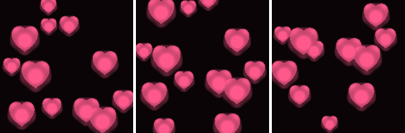
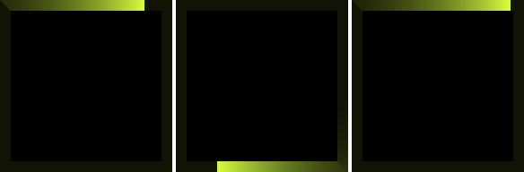
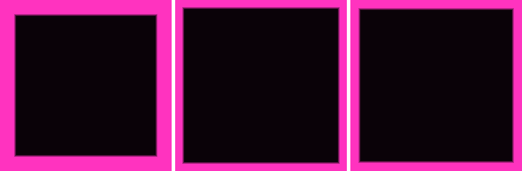
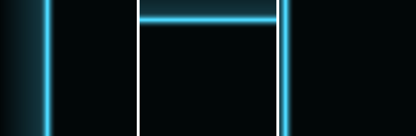
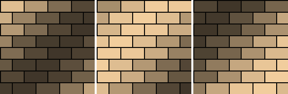
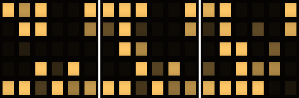
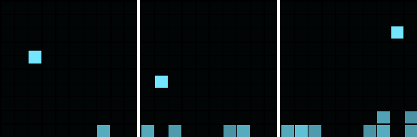
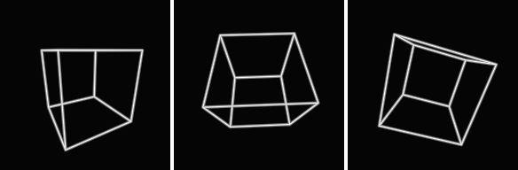
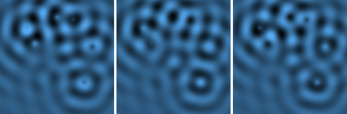
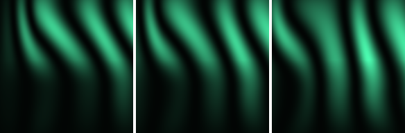
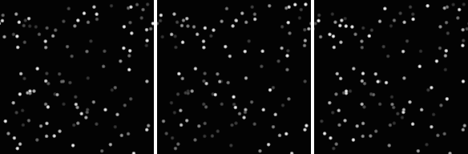
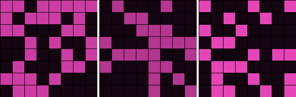
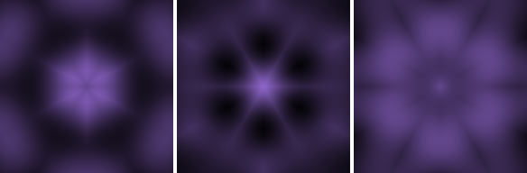
Rendered by lumap
Straight out of lumap render.
Every picture here comes from the same renderer the show uses, drawn headlessly from the demo project.
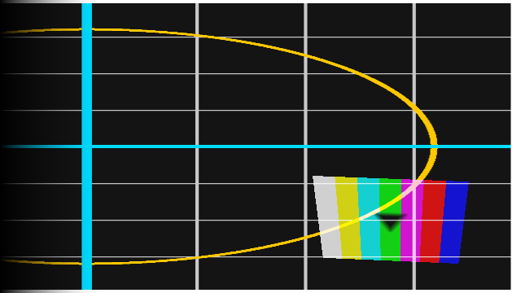
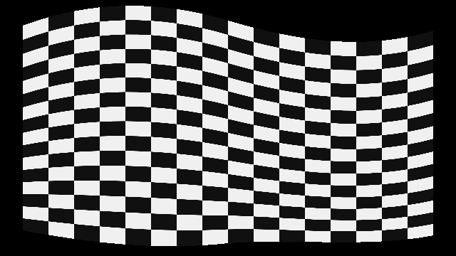
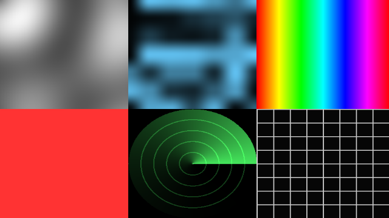
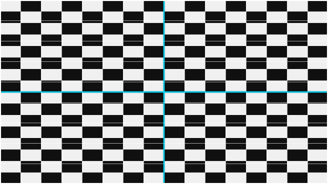
Control
GO from wherever your hands are.
Every live parameter has an address. The keyboard, OSC, MIDI, the phone remote, cues and undo all speak it, so a fader you learn today drives the same value a cue fades tomorrow.
- Keyboard
- Space GO, B blackout, I identify, T stage view, [ and ] blend gamma, ? the full list.
- OSC
/show/blackout,/show/master,/surface/<id>/opacity,/output/<id>/blend/<edge>/width,/source/<id>/play,/cue/goand every other live parameter, on port 9000 by default. Feedback echoes every change to a host and port, so a TouchOSC layout follows the app.- MIDI
- Open a port, press MIDI learn on a parameter, move a control. Fader, button and switch modes, saved in the project.
- Phone
- Start the remote, scan the QR code. Blackout, master, output levels, surface opacities and the cue list from any browser on the Wi-Fi.
- Terminal
lumap show my-show.lumap.toml --remote-port 8080 --osc-port 9000 --restart-on-stall 5goes straight into locked show mode with the outputs open.
Download
Install it, plug in, go.
- Download the installer (or pick a file from the latest release). It installs for you only, with no administrator prompt, and brings its own ffmpeg for video.
- The installer is not signed yet, so Windows may say "Windows protected your PC". Choose More info, then Run anyway.
- Open lumap, click Create outputs, and drag the corners. Or write the two-projector demo and open it:
lumap new my-show.lumap.toml - Building it yourself? With a Rust toolchain:
cargo build --release -p lumap-app --features spout
Prefer no installer? Each release also has a portable zip with a SHA-256 file to check it against.
Questions
Fair questions.
Does it need a particular graphics card?
Anything with a Vulkan or DirectX 12 driver from the last decade. The renderer is wgpu; the same maths runs on a CPU reference renderer, and the two are compared on every change.
Which video formats play?
Anything ffmpeg reads. The installer bundles ffmpeg and ffprobe; if you have your own build, point lumap at it in the settings or on your PATH.
Does it send anything anywhere?
No telemetry, no account, no analytics. The only network traffic is the OSC, MIDI and phone-remote connections you open yourself.
Where does my show live?
In one .lumap.toml file next to your media. It is plain text, diffable, versioned with migrations, and safe to commit to git.
Will there be a Mac version?
lumap is built and tested for Windows today. The macOS build is on the way, and this page will offer it as soon as it ships.
Is it free?
Yes. MIT OR Apache-2.0, one executable, no watermark, no subscription.
Docs